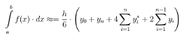

Вычисление определённого интеграла по методу Симпсона:

Чётность числа разбиений автоматически корректируется в сторону увеличения.
Погрешность вычисляется с использованием правила Рунге:
В подынтегральной функции поддерживаются:
операторы
- x + x сложение
- x - x вычитание
- x * x умножение
- x / x деление
- x % x взятие остатка
- x ^ x возведение в степень
- x! факториал
функции
- abs(x) взятие модуля
- ceil(x) округление
- cube(x) возведение в куб
- log(x) логарифи
- log10(x) логарифм по основанию 10
- sqrt(x) взятие квадратного корня
- square(x) возведение в квадрат
- acos(x) арккосинус
- asin(x) арксинус
- atan(x) арктангенс
- cos(x) косинус
- cot(x) котангенс
- csc(x) косеканс
- sec(x) секанс
- sin(x) синус
- tan(x) тангенс
константы
- e основание натурального логарифма
- i мнимая единица
- pi число π